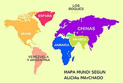

De: La Frikipedia, la enciclopedia extremadamente seria.
De: La Frikipedia, la enciclopedia extremadamente seria. De: La Frikipedia, la enciclopedia extremadamente seria.
| De la serie Países del planeta tierra: | |||||
| (Républica populal sobelano, autónomo socialista y Machadista de China) | |||||
|---|---|---|---|---|---|
| |||||
| Lema: Yiaaaaaaaaaaaaaaaah! | |||||
| Himno: Kung-Fu Fighting
| |||||
| 
| |||||
| Capital | Aliciopolis | ||||
| Mayor ciudad | Chinatown (Nueva York) | ||||
| Lenguas oficiales | Chin - o, ruso | ||||
| Gobierno | Monarquia Maoista | ||||
| Emperatriz | Alicias Marchado | ||||
| Área | Asia | ||||
| Población | {{{estimación_población}}} | ||||
| Moneda | Marchado del norte | ||||
| Zona horaria | Siempre es de noche | ||||
| Dominio Internet | .am (inic de Alicias Marchado) | ||||
| Código telefónico | 0500 Amarchado
| ||||
| El próximo impelio | |||||
China del norte es una nacion ubicada arriba de China del Sur, que nacio solo por la intencion de la ex Miss Universo Alicias Marchado al confundir al conflicto con las Coreas con Chinas (obvio que confundió a Corea del Norte con Corea del Sur) y manifestó esta intención en su cuenta twitter quien una vez cometida la burrada y bajo el ataque de sus detractores y no detractores, decidió cerrar esta cuenta, sin embargo este hecho origino a las dos Chinas nuevas.
La madre de las patrias chinas, no se conoce el padre, pero parece que fue Confusio ¡¡que pillo!! de las dos Chinas es una ex miss Universo que, se conoce por decir comentarios brutos y fuera de sentido, y por buscar fama se acuesta y tiene relaciones sexuales en realitys shows en su afan de buscar fama creo una cuenta en twitter y se puso a decir mas estupideces comentarios de paz y de armonía dirigido a Corea pero confundio con China y por obras desconocidas surgieron dos nuevas Chinas, la del Norte y la del Sur, ambas salieron de Alicias Marchado y ahora tiene una lucha intestina la cual las puedes seguir desde twitter a través de las cuentas @chinadelnorte y @chinadelsur
El primer Chino llego porque Osmel Souza influenció para que Alicias Marchado ganara el Miss Venezuela y de alli Donald Trump un lider capitalista de dejo que ganara Alicia el Miss Universo, luego de alli Alicia empezo a engordar, productos de sus viajes y de comer muchas lumpias, Arroz con camarones, Chop Suey, y patas de gallina con salsa de soya, en la perdida de esa dieta, conocio a Confusio quien la empezo a enamorar convencer con filosofia oriental y como cura pederasta la llevo a su monasterio y le sirvio en todo, por alguna extraña razon salió embarazada y se presumio que era de la naturaleza, de alli salieron dos hermanos gemelos con aspecto de Bruce Lee y Jackie Chang, El primero se fue al norte y el otro al sur, por lo cual es el origen de la Chinas del Norte, este se saco copia y bueno aun no ha parado la maquina de fotocopiadora y se siguen multiplicando.
¿La historia? Pues ésa: chinos y más chinos. Bueno, sí Alicias Marchado es la emperatriz de China del Norte y del Sur.
China del Norte es Maoista porque Alicia ama Mao.
Actualmente China es una mornarquía comunista socialista donde Alicias Marchado es la emperatriz influenciada por Ronald Mac Donald Trump.
La población china desciende al 100% del chino original, Han Confusio, de ahí que no distingamos a uno de otro. Desde hace cientos de años su poblacion se ha dedicado integramente a montar supermercados, polleras, carnicerias y uno que otro cyber cafe que no cierran ni en el día de su boda. venden y cobran muy caro economomico, y tienen mucha clientela puesto aunque al dueño le sueles preguntar donde estan por ejemplo los vasos de plastico y te dice que no le quedan mecheros, eso si a la hora de cobrar bien que entienden: cinco mil bolivales!!! .
Alicias Marchado se ha preocupado por este sector, y por ello las cirugias de esteticas pronto abundaran en China,
Se supo que eres gay Alicias Marchado engordó y con unas pastillas Fast Fat rebajo, por lo cual estas se estan produciendo en China del Norte de forma generica pero tuvo efectos colaterales no deseados para su primer fin y decidieron comercializarla de otra presentacion y son conocidas ahora como pastillas "Minimice Brain Brain". Alicias Marchado toma 2 cajas de pastillas diarias.
La emperatriz Alicias Marchado no descuida este sector y se esmera sobretodo en Geografia ya que la China del Norte es muy grande, (vease el mapa) y para que sus estudiantes conozcan que los canguros estan en Madagascar, y se ha valido de eminentes filosofos, como el filosofo del zulia en Venezuela llamado Manuelito Rosales quien dice que Alaska es un pais, y que Margarita es una isla rodeada de agua salada.
Las estudiantes chinas norteñas estan muy bien asesoradas por su emperatriz, según encuestas que se le han hecho a jovenes chinas en edad de ir al instituto, a ellas les encanta la escuela y las hace felices vestir sus uniformes escolares con orgullo (ya hemos visto por qué).
Con la apertura a occidente, China del norte se convirtió en el país asiático mas "In", y es lógico, ya que allí la moda también es manejada por "Made in China". Logico al ser gobernado por una ex miss universo como Alicias Marchado es de esperarse
Muy rica en arroz, que solo la sazon de Alicias Marchado puede darte, pero se exporta grandes cantidades de lumpias, contenedores de Chop Suey, Pan chen choi y otras exquisiteses mas. (¿por que crees que abundan en todas partes restaurantes chinos?)
China del Norte no posee playas, pero tiene rios con sus habitantes esperando complacer tus deseos y dejarte sin nada en los bolsillos, la politica de Alicias Marchado en este aspecto ha sido muy tajante para atraer al turista occidental.
| |
|---|
| Arabia Saudita • Azerbaiyán • Bahrein • Bangladesh • Bután • Birmania • Brunéi • Camboya • Emiratos Árabes • Indonesia • Jordania • Kuwait • Kirguistán • Maldivas • Nepal • Omán • Qatar • Singapur • Sri Lanka • Tayikistán • Timor Oriental • Yemen |
Autor(es):